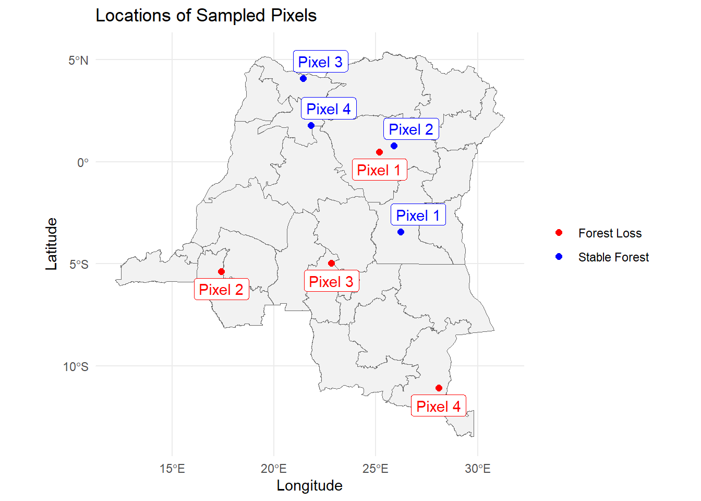
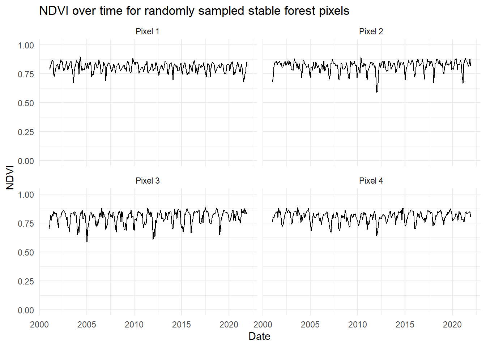
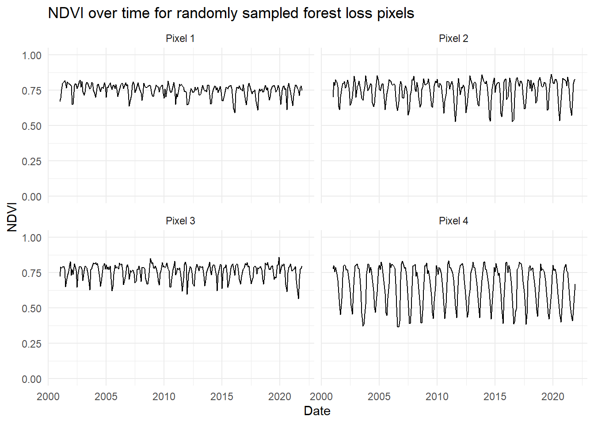

To complete our forest cover change series, we’ll focus on why NDVI is so difficult to use in measuring forest cover change. NDVI measures greenness - how do we know an area has been cleared of forest for agriculture, which is also typcially green?
Understanding the limitations of NDVI to measure forest cover
If one were to try to use NDVI to identify when a pixel turned from forest into a different land cover type, we might first want to determine a threshold value of NDVI where we might say the pixel has lost forest. However, this is much more complex than it might seem. Many places in the world differ in greenness on a seasonal basis.
One way to better understand the range of values NDVI might be to look at NDVI over time. Let’s look NDVI values over time in a few randomly-selected pixels. We can compare pixels that are “forest loss” pixels” to “stable forest” pixels.
Read in forest loss and stable forest layers
To save space in this post, we have created two data layers derived from our workflow in the first post on deforestation using Land Use/Land Cover data from NASA, we have called them “forest_loss.tif” and “stable_forest.tif”. The raster layer “forest_loss.tif” has 0.05 degree resolution and contains a pixel value of 1 when the pixel was forest in 2001, but was anything but forest in 2021, and NA otherwise. The “stable_forest.tif” raster layer has pixel values of 1 if the pixel was forest in both 2001 and 2021. Keep in mind that the pixel might have been non-forest at any point between 2001 and 2021 - for the purposes of this blog we are assuming the pixel has been forest the whole 20 year period.
Code
# Read in librarieslibrary(terra)library(dplyr)library(tidyr)library(stringr)library(sf)library(ggplot2)library(ggspatial)library(purrr)library(lubridate)library(ggrepel)# Read in shapefiles with 1st level administrative boundariesdrc_internal_borders <-read_sf("data/COD_admbnda_adm1_20170407.shp") |>st_make_valid()drc_borders_vect <-vect(drc_internal_borders)# Read in forest loss and stable forest layersforest_loss <-rast("data/forest_loss.tif")stable_forest <-rast("data/stable_forest.tif")# Plot forest lossdrc_borders_vect <-project(drc_borders_vect,crs(forest_loss))lulc_differences_map <-ggplot() +layer_spatial(forest_loss) +scale_fill_gradient(high ="red", na.value ="transparent") +layer_spatial(drc_internal_borders, fill="transparent") +theme_minimal() +theme(legend.position ="none")lulc_differences_map
Read in NDVI data
First, we’ll need to read in NDVI data. We downloaded monthly NDVI values from NASA’s EarthData Search and converted them to TIFF files in R (not shown). The name of the data product is MOD13C2. The resolution is 0.05 degrees, and the code in each layer’s name represents the year and the Julian day that corresponds to the first day of the month. For example, the layer representing the average NDVI value for July 2005 will contain the string “A2005182”, because July 1st is the 182nd day of a non-leap year.
The preparatory steps that need to be taken include cropping the files to the Democratic Republic of the Congo borders, combining them into one multi-layered raster, and assigning timestamps to each layer. We also need to make sure the projections of the LULC and NDVI layers match.
# Read in TIF file listtif_files_ndvi <-list.files("data_local/ndvi", full.names =TRUE, pattern ="\\.tif$")# Read in tif files as rasters into a listndvi_months <-lapply(tif_files_ndvi, rast)# Change CRS of border vector and forest layers to match NDVI rasterdrc_borders_vect <-project(drc_borders_vect,crs(ndvi_months[[1]]))forest_loss <-project(forest_loss, crs(ndvi_months[[1]]))stable_forest <-project(stable_forest, crs(ndvi_months[[1]]))# Crop tif filescropped_list <-lapply(ndvi_months, function(r) {crop(r, drc_borders_vect)})# Combine the cropped files into one multi-layer rastercombined_ndvi <-do.call(c, cropped_list)# Mask layers to the DRC bordersmask_ndvi <-mask(combined_ndvi,drc_borders_vect)# Apply time to raster layerstimestamps <-unique(stringr::str_extract(tif_files_ndvi, "(?<=A)[0-9]{7}"))terra::time(mask_ndvi) <-unique(lubridate::parse_date_time(timestamps, "yj"))# Adjust scalemask_ndvi <- mask_ndvi /100000000# Reclassify out-of-range data to NAm <-matrix(c(-Inf, -1, NA), nrow =1)mask_ndvi <-classify(mask_ndvi, m)
Creating a function to extract NDVI values of pixels
Now that we have the NDVI data in order, we will write a function to pick a random cell from a given forest layer, convert the cell’s location into geographic coordinates, and extract 20 years worth of monthly NDVI data for that pixel.
# Setting a seed for a reproducible random sampleset.seed(81818) get_pixel <-function(i, valid_cells, forest_layer, mask_ndvi) {# Randomly select a forest layer pixel random_cell <-sample(valid_cells, size =1)# Get pixel coordinates random_coords <-xyFromCell(forest_layer, random_cell)# Create a point random_point <-vect(data.frame(x = random_coords[1, 1],y = random_coords[1, 2] ),geom =c("x", "y"),crs =crs(forest_layer) )# Extract NDVI values across all layers ndvi_values <- terra::extract(mask_ndvi, random_point)# Return a data framedata.frame(pixel =paste0("Pixel ", i),cell = random_cell,date =time(mask_ndvi),NDVI =as.numeric(ndvi_values[1, -1]) )}
You’ll notice within the function, we need to express the location of the pixel to R in terms of the projection that the LULC and NDVI data are in. Earlier, we ensured that we are using the same projection, so the coordinates will match. The NDVI and LULC are also the same resolution.
# Same projection?terra::same.crs(forest_loss, mask_ndvi)#> [1] TRUE# Same resolution?res(forest_loss)#> [1] 0.05 0.05res(mask_ndvi)#> [1] 0.05 0.05
Calling on the pixel-sampling function
Next, we’ll set the number of pixels we want R to select from each layer and call on the function with both the forest loss and stable forest layers. The lapply() function with bind_rows() will call our get_pixel() function N times and add the extracted NDVI values into the same dataframe called ndvi_forest_loss_pixels for the forest loss layer or ndvi_stable_forest_pixels for the stable forest layer.
# Choose the number of pixels to sampleN <-4# Identify valid forest layer cellsvalid_cells_forest_loss <-which(!is.na(values(forest_loss)[, 1]))valid_cells_stable_forest <-which(!is.na(values(stable_forest)[, 1]))# Sample N forest loss pixels and extract their NDVI time seriesndvi_forest_loss_pixels <-bind_rows(lapply(seq_len(N), get_pixel,valid_cells = valid_cells_forest_loss,forest_layer = forest_loss, mask_ndvi ))# Then do the same for stable forest pixelsndvi_stable_forest_pixels <-bind_rows(lapply(seq_len(N), get_pixel,valid_cells = valid_cells_stable_forest,forest_layer = stable_forest, mask_ndvi ))
Create dataframe of selected pixel coordinates
We also want to be able to map where the pixels are located, so we’ll need to create a dataframe that converts the pixel numbers into the coordinates for mapping.
# Convert selected pixels list into coordinates as dataframepixel_loss_locations <- ndvi_forest_loss_pixels %>%distinct(pixel, cell) %>%mutate(coords =lapply(cell, function(x) {xyFromCell(forest_loss, x) }),x =sapply(coords, function(x) x[1, 1]),y =sapply(coords, function(x) x[1, 2]) ) %>%select(pixel, cell, x, y)pixel_forest_locations <- ndvi_stable_forest_pixels %>%distinct(pixel, cell) %>%mutate(coords =lapply(cell, function(x) {xyFromCell(stable_forest, x) }),x =sapply(coords, function(x) x[1, 1]),y =sapply(coords, function(x) x[1, 2]) ) %>%select(pixel, cell, x, y)# Create sf version of bordersdrc_borders_sf <-st_as_sf(drc_borders_vect)# Ensure borders use the same CRS as forest rasterdrc_borders_sf <-st_transform( drc_borders_sf,crs(forest_loss))
Mapping selected pixels
We’ll map the randomly selected pixels. Keep in mind that these are not randomly selected pixels across the entire area of the DRC: they are randomly selected from pixels that are categorized as forest loss or stable forest between 2001 and 2021.
# Map sampled pixelsggplot() +geom_sf(data = drc_borders_sf,fill ="gray95",color ="gray40" ) +geom_point(data = pixel_loss_locations,aes(x = x, y = y, color ="Forest Loss"),size =2 ) +geom_point(data = pixel_forest_locations,aes(x = x, y = y, color ="Stable Forest"),size =2 ) +scale_color_manual(name =NULL,values =c("Forest Loss"="red","Stable Forest"="blue" ) ) +geom_label_repel(data = pixel_forest_locations, color ="blue",aes(x = x, y = y, label = pixel)) +geom_label_repel(data = pixel_loss_locations,color ="red",direction ="y",nudge_y =-0.5,aes(x = x, y = y, label = pixel)) +labs(title ="Locations of Sampled Pixels",x ="Longitude",y ="Latitude" ) +theme_minimal()

Graph NDVI values over time
Next, we’ll graph the NDVI values for the selected pixels over time. First, we’ll look at the stable forest pixels.
# Plot NDVI values over timeggplot(ndvi_stable_forest_pixels, aes(x = date, y = NDVI)) +geom_line(na.rm =TRUE) +ylim(0, 1) +facet_wrap(~ pixel, ncol =2) +labs(title ="NDVI over time for randomly sampled stable forest pixels",x ="Date",y ="NDVI" ) +theme_minimal()

Notice the variation in the value of NDVI in one pixel over the course of one year - this is likely the result of dry versus wet seasons experienced in the DRC. Next, we’ll graph the “forest loss” pixel NDVI values.
# Plot NDVI values over timeggplot(ndvi_forest_loss_pixels, aes(x = date, y = NDVI)) +geom_line(na.rm =TRUE) +ylim(0, 1) +facet_wrap(~ pixel, ncol =2) +labs(title ="NDVI over time for randomly sampled forest loss pixels",x ="Date",y ="NDVI" ) +theme_minimal()

Keep in mind that these Pixels 1 through 4 are not the same randomly sampled pixels as the stable forest layer. The stable forest and forest loss layers are mutually exclusive. The numbering for these pixels is the order in which they were sampled from their respective layers.
Again, we see seasonality in each of these pixels, though we notice forest loss Pixel 4 has a much higher seasonal variance. This might be due to it being located in a different biome or have a different tree species mix relative to the other pixels. However, the mean value does not seem to change over time for these pixels, and there don’t seem to be obvious breakpoints in which NDVI drops significantly in any of the pixels. It appears that the land cover that replaced forest in each of these pixels still had a comparable level of greenness.
Further direction
One approach you might consider using to identify a statistically significant change in a vegetative index value is the Breaks For Additive Season and Trend (BFAST) Monitor algorithm. See Vesserbelt et al. 20121, Dutrieux et al. 20152, and Schlutz et al. 20163 for example analyses that use the BFAST method to evaluate forest cover loss or disturbance. The main benefits of the BFAST method is its ability to identify values that deviate from historical values with consideration of natural seasonal changes in greenness.
Conclusion
Given that NDVI changes seasonally in forests, either because of wet versus dry season, or temperature variation at latitudes closer to north and south poles, it is difficult to draw conclusions about what NDVI value threshold one might choose to designate when a pixel has lost forest cover. Moreover, seasonal changes in greenness might be of greater magnitude in terms of NDVI than a pixel changing from forest to agriculture. So it is not recommended to set arbitrary thresholds for NDVI values to use as a metric of deforestation in contextual data you might be using to answer a research question. Instead we recommend using data products that use more input than greenness alone to categorize a pixel as forest, or to use statistical approaches that use historical data like the BFAST method to identify significant land cover change.
References
1. Verbesselt, J., Kalomenopoulos, M., Souza, C., & Herold, M. (2012). Near real-time deforestation monitoring in tropical ecosystems using satellite image time series. 2012 IEEEInternationalGeoscience and RemoteSensingSymposium, 2020–2023. https://doi.org/10.1109/IGARSS.2012.6350980
2. Dutrieux, L. P., Verbesselt, J., Kooistra, L., & Herold, M. (2015). Monitoring forest cover loss using multiple data streams, a case study of a tropical dry forest in Bolivia. ISPRS Journal of Photogrammetry and Remote Sensing, 107, 112–125. https://doi.org/10.1016/j.isprsjprs.2015.03.015
3. Schultz, M., Clevers, J. G. P. W., Carter, S., Verbesselt, J., Avitabile, V., Quang, H. V., & Herold, M. (2016). Performance of vegetation indices from Landsat time series in deforestation monitoring. International Journal of Applied Earth Observation and Geoinformation, 52, 318–327. https://doi.org/10.1016/j.jag.2016.06.020